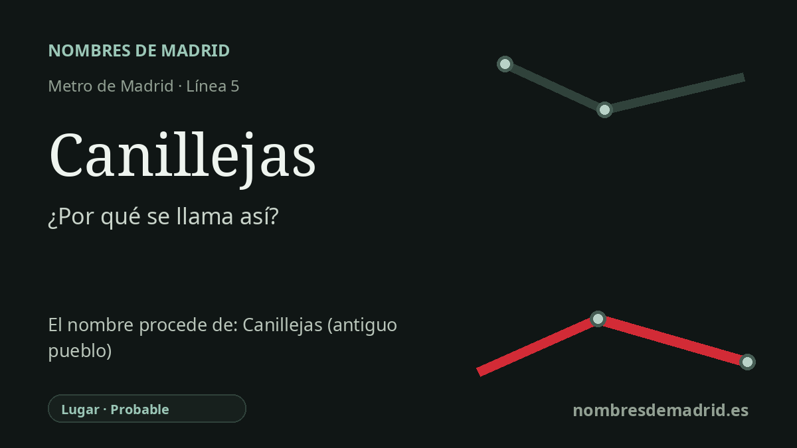

Publicado el · Investigación de Nombres de Madrid · Cómo verificamos cada origen · 12 fuentes consultadas
Respuesta rápida
La estación de Canillejas toma su nombre del antiguo pueblo y municipio de Canillejas, incorporado a Madrid en 1950. El topónimo probablemente se relaciona con canilla/canillas, voces asociadas a pequeños caños, espitas o conducciones, una lectura coherente con una zona vinculada al antiguo abastecimiento subterráneo de agua de Madrid.
La historia del nombre
La estación de Canillejas recibe el nombre del barrio madrileño en el que se encuentra, pero ese barrio conserva un topónimo mucho más antiguo. Antes de integrarse en la capital, Canillejas fue un pequeño asentamiento y después un municipio independiente en el borde oriental de Madrid, junto al antiguo camino que unía Madrid con Alcalá de Henares y Aragón.
La explicación más habitual relaciona el nombre con canilla o canillas, voces asociadas a un pequeño caño, una espita, un grifo o una conducción. La interpretación encaja bien con el paisaje histórico. El sistema tradicional de abastecimiento de Madrid, los viajes de agua, captaba aguas subterráneas al norte y nordeste de la ciudad, también en el entorno de Canillas y Canillejas, y las llevaba hacia la villa mediante galerías y canales.
La documentación histórica es más firme para el lugar que para el origen lingüístico exacto. Un expediente patrimonial de 2019 sobre Santa María la Blanca cita las Relaciones Topográficas de Felipe II de 1579, donde Canillejas aparece como lugar de la jurisdicción de Madrid, del arzobispado de Toledo, situado a legua y media de la villa. Otras fuentes posteriores describen su iglesia, sus campos, jardines y manantiales, lo que muestra un núcleo rural anterior en siglos a la llegada del metro.
Canillejas perdió su independencia municipal durante la expansión madrileña de posguerra. Un decreto fechado el 24 de junio de 1949 aprobó la anexión total del término municipal y del Ayuntamiento de Canillejas al de Madrid; los inventarios archivísticos registran la anexión efectiva el 30 de marzo de 1950. El nombre sobrevivió como barrio y, en 2012, volvió también a la denominación del distrito San Blas-Canillejas tras un acuerdo municipal que reconocía el peso histórico del antiguo municipio.
Metro le dio al topónimo una nueva función de transporte cuando la línea 5 se prolongó hacia el este desde Ciudad Lineal hasta Canillejas. La ficha de inauguración fechada el 18 de enero de 1980 recoge el nuevo tramo con tres estaciones: Suanzes, Torre Arias y Canillejas. Por eso, el nombre de la estación está firmemente explicado como topónimo local; la etimología hidráulica es probable y está bien contextualizada, pero sigue siendo una explicación tradicional o verosímil mientras no aparezca una fuente toponímica especializada.